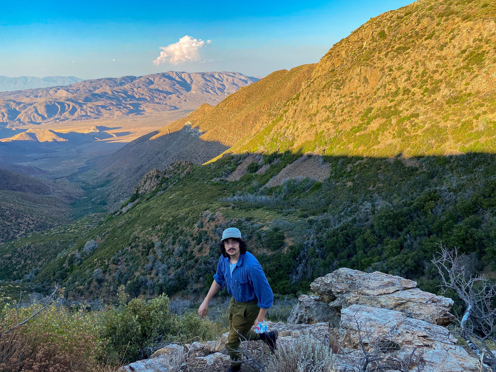
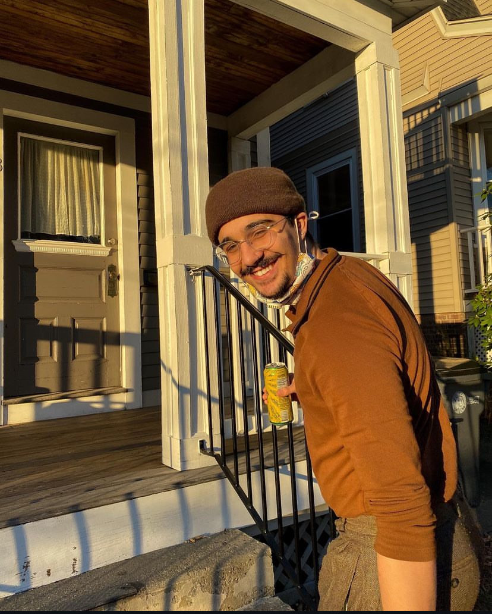

|

|

|
About me
My name is Owen Cuseo. I was born in Honolulu, Hawai'i, and I originally went to school to study astrophysics at the University of Maryland. Since then, I have switched focus and am now an environmental education major at the University of Rhode Island.
My jobs
I work full-time as the Program Manager at the Met High School's Center for Innovation and Entrepreneurship, where I teach high school students how to start businesses and pitch their ideas to investors.
I am also the workshop coordinator at the Providence Public Library, where I teach community members how to use workshop equipment such as sewing machines, laser cutters, 3D printers, and more. Come visit us if you're in the area!
Additionally, I am contracted by a nonprofit wildlife education organization called Wild Lives, where I assist in educational programming. I am currently editing videos about Rhode Island wildlife for the PBS Learning Center.
Outside of school and work, I enjoy hiking, reading, and stargazing.
|  |  |